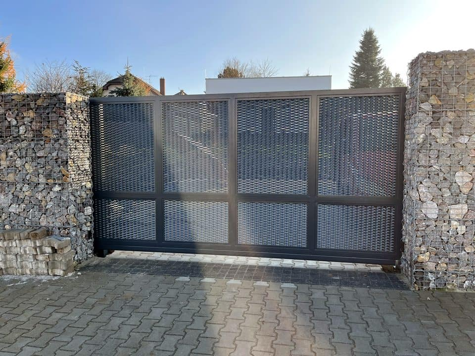

Garage doors
Custom-made doors, installation, adjustment, repairs and complete delivery including operator, motor and controls.
Garage doors and service
Garage door service, gate repair and custom solutions
We repair and install garage doors, gates, operators, barriers and automatic doors in Prague and Central Bohemia. First we assess the equipment, then recommend repair or the next sensible step.
Direct answer
Vrata Šnábl provides garage door service, gate repair, operator installation, barrier service and automatic door service in Prague and Central Bohemia. The company helps homes, companies, apartment buildings and managed sites with diagnostics, repair, adjustment, upgrades and custom-made solutions.
Call or send a short inquiry with the location, equipment type and a photo if available. That makes the first recommendation faster and more precise.
Quick choice
You do not need to read the whole website. Choose the closest situation and quickly get to service, repair, operator work or a new custom-made solution.
What we solve
We help with new custom-made doors or gates as well as service of existing equipment. First we assess condition, space and daily use, then we recommend repair, upgrade or a new solution.
Custom-made doors, installation, adjustment, repairs and complete delivery including operator, motor and controls.
Garage doors and serviceSliding and swing gates for homes, companies, apartment buildings and managed sites. We design the solution according to space, daily traffic and usage frequency.
Entrance gatesMotors, remote controls, safety elements, upgrades of older equipment and installation of new operators.
Operators and controlsDiagnostics, repair and adjustment of doors, gates, operators, barriers and automatic doors. We tell you when repair makes sense.
Arrange serviceProjects and work examples
We show a focused selection so it is quickly clear that we handle new custom-made work, operator service and technical solutions for companies and managed properties.


Need a similar solution? Send a photo of the equipment, or call directly. We can understand faster whether the next step is service, adjustment, operator upgrade or a new custom-made solution.
View all projectsFaster agreement
A photo of the door, gate, operator, barrier or automatic door is often enough for first orientation. We can tell more quickly whether the next step is service, adjustment, modification, part replacement or a new custom-made solution.
Why call us
Good service depends on experience, accurate diagnostics and a fair recommendation. We tell you whether repair, adjustment, part replacement, operator upgrade or a new custom-made solution makes sense. We stand behind our work.
We do not try to sell new equipment at any cost. If repair or adjustment is enough, we say so. If an operator upgrade or new custom-made doors make more sense, we explain why.
Describe the situation and agree the next stepWho stands behind the work
Vrata Šnábl is a verifiable company based in Červený Újezd, with Company ID (IČO) 62986856 and public profiles. In practice, that means direct communication, specific recommendations and responsibility for service and installation.
For urgent service, calling is fastest. For a larger installation or replacement, send the location, photos and a short description; we will suggest the practical next step.
Call +420 777 286 310Company verification
A trustworthy local service company should be verifiable outside its own website. That is why we list public profiles, contact details and real work examples in one place.
Where we work
We work for family houses, companies, apartment buildings, property managers and site operators in Prague and the Central Bohemian Region. We most often handle garage door service, sliding and swing gate repairs, barrier service and automatic door service. If the old solution is no longer enough, we can deliver custom-made doors including operator, controls and installation.
Local services
A phone call is usually fastest when a door will not open, an operator does not respond or an entrance system limits operation. We help with service, installation and new custom-made solutions in Prague and Central Bohemia.
How cooperation works
Location, equipment type and a short problem description are enough. If you have a photo of the door, gate, operator or barrier, it helps us estimate the next step faster.
Based on the fault and location, we arrange service, inspection, measurement or technical consultation. For new doors, we discuss dimensions, operator and usage.
We inspect, repair and adjust the equipment. For a new solution, we provide production, delivery, operator installation, controls and commissioning.
Typical situations
Price orientation
The exact price depends on equipment condition and installation complexity. To help you prepare, these are the factors that usually matter most.
For new doors and gates, width, height, track space, construction type and required appearance matter.
The price changes with motor type, remote controls, safety elements, end positions and usage frequency.
For service, it matters whether adjustment, part replacement, operator repair or full upgrade is the sensible option.
It helps to know the location, access to equipment, property type and whether it is a family home, apartment building, company or site.
Advice
Short guides for the most common decisions: when to repair, when to upgrade and what to prepare before requesting service.
FAQ
The price mainly depends on dimensions, construction, operator, controls, accessories and installation complexity. That is why it makes sense to discuss the space and requirements first, or arrange measurement.
Equipment type, parts availability, condition of mechanics, operator, controls and safety elements matter, as well as whether it is a single fault or a recurring problem.
For frequently used doors and gates, regular inspection of movement, mechanics, operator and safety elements makes sense. For companies, apartment buildings and managed sites, prevention is more important than waiting for a fault.
Typical signs are irregular movement, stopping, unusual noise, remote-control problems, incorrect end positions or recurring faults even after adjustment.
It depends on location, fault type and current workload. The fastest way is to call, briefly describe the problem and agree the next step.
Yes. We service, adjust and upgrade existing doors, gates, operators, automatic doors and barriers even if we did not originally install them.
After inspection we recommend a sensible next step. If repair makes sense, we repair. If it would be short-term or uneconomical, we recommend an upgrade or a new custom-made solution.
Yes. We provide consultation, measurement, design, custom manufacture, delivery, installation with motor, controls, commissioning and follow-up service.
Yes. For suitable gates, we handle installation, service and adjustment of operators, motors, controls, safety elements and end positions.
Yes. We service barriers, automatic doors and access systems mainly for companies, apartment buildings, institutions and sites.
Location, equipment type, a short fault description and, ideally, a photo of the door, gate, operator or barrier. This helps us understand the situation faster.
Yes. A photo of the door, gate, operator, barrier or automatic door often helps us understand whether the next step is service, adjustment, part replacement or a new solution.
Yes. We mainly work in Prague and Central Bohemia, including the areas around Prague, Kladno, Beroun, Melnik, Benesov, Pribram, Kolin, Kutna Hora and Mlada Boleslav.
Yes. English communication is available for expats, property managers, facility managers and English-speaking customers in Prague and Central Bohemia. The fastest way is to call or send a short inquiry with location and a photo.
Contact details, Company ID (IČO) and address are listed directly on the website. You can also verify us through the Google profile, Firmy.cz listing and real project photos in the Projects section.
Yes. First we check the condition, operator type and available options. Then we recommend repair, adjustment, part replacement or a new solution depending on what makes sense.
Yes. We also handle adjustment, noise, scraping, remote-control issues, photocells, safety components and unreliable movement of garage doors and gates.
For service, we first check the condition and agree the next step. For installation or replacement, we clarify the solution type, dimensions, location and scope before work starts.
Send the address, photos, a short fault description and a local access contact. English communication is available, so expats and property managers can coordinate service remotely.
Contact
Tell us the location, equipment type and what happened. For service, a phone call or photo helps. For new doors, we discuss measurement, manufacture, delivery and installation including motor and controls.
First we check whether you need service, installation, modernization or a new custom solution.